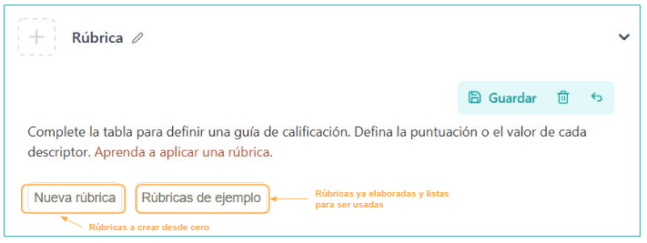
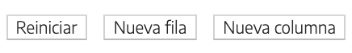
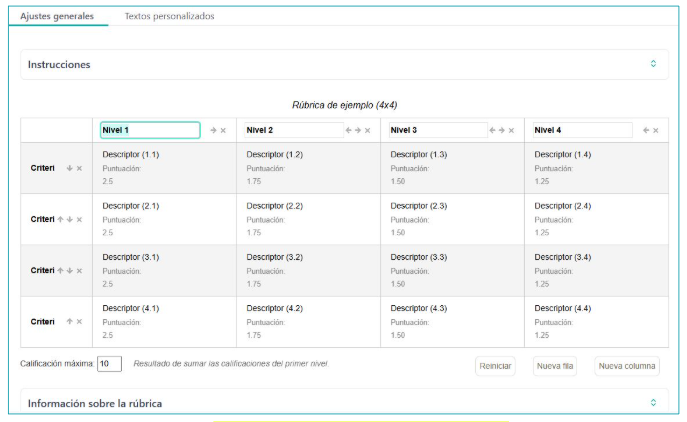
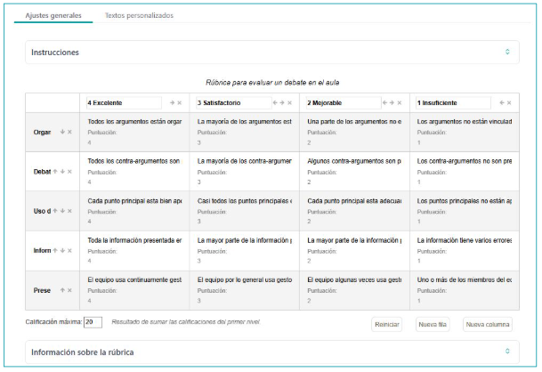
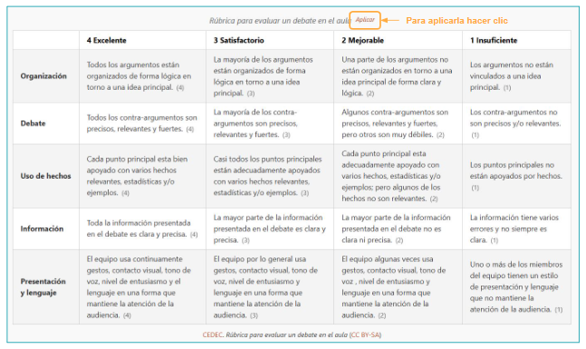
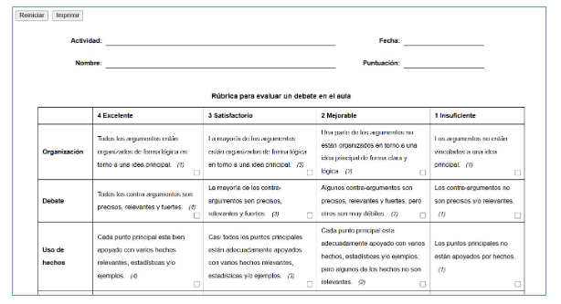

What is it?
We will use this iDevice to incorporate assessment rubrics into the resource.
Usage example
| 4 Excellent | 3 Satisfactory | 2 Needs Improvement | 1 Insufficient | |
|---|---|---|---|---|
| Formal Aspects | Submitted on time, meets the instructions for minimum length, cover page, table of contents, and structure. (4) | Submitted on time, meets almost all instructions for minimum length, cover page, table of contents, and structure. (3) | Submitted on time, meets some instructions for minimum length, cover page, table of contents, and structure. (2) | Not submitted on time or does not meet the instructions for minimum length, cover page, table of contents, and structure. (1) |
| Content | All contents are well organized and fit the established topic. (4) | Almost all contents are well organized and fit the established topic. (3) | Some of the contents are well organized and fit the established theme. (2) | The contents are not well organized and do not fit the established theme. (1) |
| Expression and spelling | It is correctly written and complies with spelling and grammatical rules. (4) | It is correctly written and complies with almost all spelling and grammatical rules. (3) | It is not correctly written, but complies with almost all spelling and grammatical rules. (2) | It is not correctly written and does not comply with spelling and grammatical rules. (1) |
| Personal contribution | Conclusions and creative and original contributions are provided that give a personal touch to the work. (4) | Creative and original contributions are incorporated that give a personal touch to the work. (3) | Conclusions are provided but not creative and original contributions that give a personal touch to the work. (2) | Neither conclusions nor creative and original contributions are provided that give a personal touch to the work. (1) |
- Activity
- Name
- Date
- Score
- Notes
- Reset
- Apply
- New window
How is it done?
We can create one from scratch or load some of those that come as models in eXeLearning.

In either case, we will be able to customize all parameters:
- The rubric title
- The aspects to be assessed
- The performance levels
- The descriptors
- The weight of each descriptor
- Also change the order and delete columns and rows , and add new ones

.
Once the rubric is created, we can apply it to evaluate students and print the assessments.
The process for using the Rubric iDevice is detailed below.
New rubric
If we select "New rubric", our starting point will be a 4x4 table that we can complete and customize.

Example rubrics
If we select "Example rubrics", we can choose from several proposed ones (oral presentation, video, infographic...) for subsequent adaptation. All fields are modifiable.

Preview
Once the rubric is created, we will save our iDevice. In preview we can see how the rubric will look and we can use it to evaluate by clicking "Apply".

Rubric application
Once the corresponding student's rubric is filled in, we can print the evaluation or save it as pdf.
